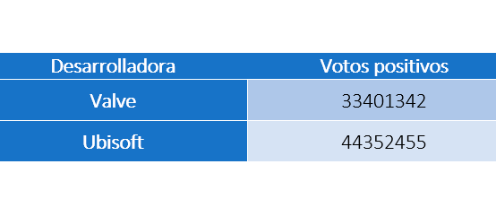

En numerosas ocasiones, los usuarios tienen la necesidad de saber cómo va a ser un determinado juego antes de su salida, ya que esto les permitiría ahorrar su valioso dinero y tiempo e invertirlo en buscar otro juego distinto o en realizar otro tipo de tareas que pudieran aportarle el mismo valor y satisfacción.
Con esta idea en mente, pensamos en desarrollar esta herramienta. Con ella, realizamos un análisis del mercado de los videojuegos para conseguir que el usuario tenga una perspectiva clara de si merece la pena probar un determinado juego o no. Para ello, hemos basado este análisis en la empresa desarrolladora que se ha encargado de hacerlo y en la puntuación que se ha obtenido en juegos anteriores en el mismo género en el que se encuentra encasillado el juego que queremos probar. Dicho de otra manera, si X juego pertenece al género Y, se analizan cómo fueron votados en el pasado los juegos que pertenecen a Y, y se concluye si la empresa que los ha desarrollado crean buenos juegos de ese tipo o no.
Una vez explicado todo lo anterior, vamos a profundizar un poco más en qué pasos se han seguido para poder llegar al objetivo
Para el análisis, se ha optado por utilizar Apache Spark: un framework de computación en clúster open-source que permite paralelizar todo el procesamiento y hacer este proceso mucho más rápido. Además, se han importado librerías propias de Python como: csv, operator, sys y time, que nos permitirán manejar los resultados obtenidos y aportar información como el tiempo de ejecución.
Después, pasamos a realizar todos los ajustes necesarios para el correcto funcionamiento la efectiva paralelización de nuestro script.
En este punto, podemos realizar la lectura del dataset y la selección de las columnas que vamos a utilizar para el análisis, en nuestro caso: "Developer", "Genres", "Positive_ratings" y "Negative_ratings". Es importante saber que, después de haber estado pensando cuál es la mejor manera de darle una puntuación a un juego, llegamos a la conclusión de que lo mejor sería obtener cuál es la ganancia de votos que obtuvieron con cada juego. Si obtenían una ganancia negativa, esto disminuiría la puntuación general que tuviesen en ese genero y si aumentaba, significaría que los usuarios se han sentido satisfechos con la experiencia que han tenido jugándolo.
A partir de aquí, tuvimos que pensar el algoritmo que nos permitiera reunir y darle una forma a la idea que teníamos y los resultados que queríamos obtener. Nuestra primera idea, fue crear una estructura de datos que cumpliese con todo ello y, sobre la cual, se pudiera hacer una consulta posteriormente para conseguir la recomendación.
La estrutura de datos ideada fue la que podemos observar a la derecha:
Esta estructura se podría modelar como un diccionario cuya clave sea la empresa desarrolladora y su valor sea otro diccionario, con el género como clave y los votos como valor.
Esto sería una buena opción en el caso de tener pocos datos y querer mantenerlos porque haya otro sistema realizando distintas consultas sobre ello. En nuestro caso, esto no sería nada viable ya que con la gran cantidad de datos que tenemos, esta única estructura utilizaría muchos recursos en cuanto a memoria RAM se refiere y ralentizaría la interacción con el sistema. Por lo tanto, había que darle otro enfoque.
Aquí entra en juego el algoritmo que creamos. En él utilizamos el siguiente diccionario:
Con ella únicamente guardamos los votos que se han obtenido para el género buscado en concreto. De esta manera, no guardamos información irrelevante como podría ser el resto de géneros y sus votos, aumentándo así la rápidez de procesamiento y optimizando los recursos utilizados.
Al terminar este bucle, se ordena la estructura y se exportan los datos en un archivo con formato CSV para su posterior visualización. Además, se muestran unos mensajes por consola indicando si se ha recomendado la empresa o no.
Para poder generar las gráficas de los resultados obtenidos en el apartado de las recomendaciones, valdría con poner un comando en la terminal como el siguiente:
$ python3 graph.py "rankingPara_.csv" "Genero"
Siendo "rankingPara_.csv" los resultados que acabamos de generar.